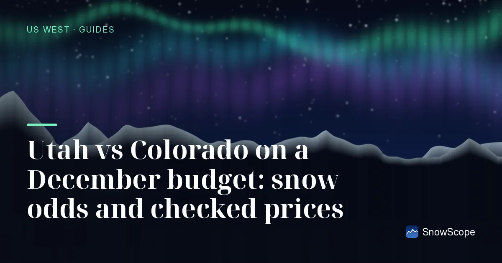

Utah ولا Colorado لميزانية ديال دجنبر: فرص التلج والأثمنة اللي تأكدنا منهم
Utah عندها سمعة التلج الناعم بكري، وColorado عندها سمعة العلو. لرحلة ديال دجنبر بميزانية محدودة، قارنا محطتين ف Utah وأربعة ف Colorado بنفس الأرقام: التلج العادي نهار 15 دجنبر، النسبة ديال الشتوات اللي فيها 20 in (50 سم) ولا كثر، وثمن الكبار فالصفحة الرسمية ديال كل وحدة.
شوف توقعات التلج مباشرة ديال Utah and Colorado فالتطبيق ديال SnowScopeالعلو ديال التلج، التنبيهات والخريطة 3D، فابور.
Utah: نجمة وحدة، رهان بالزوج
Brighton هي الأحسن ف Utah. نص الجبل ديالها كان فيه 37 in (94 سم) فنهار 15 دجنبر عادي، و20 in ولا كثر ف89 % من الشتوات؛ حتى دجنبر ضعيف (وحد من عشرة) خلى فيها 20 in (52 سم). التذاكر كتبدا من 72 $ إلا شريتي بكري.
Beaver Mountain، حدا Logan، هي العكس: ثمن كبار ثابت 75 $ بلا زيادة ديال الضغط، ولكن 22 in (57 سم) فنص الجبل فنهار 15 دجنبر عادي وغير 57 % من الشتوات فوق 20 in. للمقارنة، Park City كان فيها 25 in (64 سم) و72 %؛ ماقارناش الأثمنة ديالها.

Colorado: أثمنة أقل، تلج أرق
Colorado عندها الأثمنة الأقل بين الجوج. Ski Cooper ثمنها 49 $ فوسط السيمانة و99 $ فالويكاند والعطل، مع 26 in (66 سم) فنص الجبل فنهار 15 دجنبر عادي و70 % من الشتوات فوق 20 in. Loveland كتبيع تذاكر أونلاين ب60 $ حتى 13 دجنبر، من بعد 159 $ فالشباك، مع 29 in (74 سم) و67 %. Sunlight كتبدا من 74 $، مع 26 in (67 سم) و72 %.
Wolf Creek هي الاختيار الرخيص الأكثر تلج ف Colorado فالأرقام ديالنا: 34 in (87 سم) فنهار 15 دجنبر عادي و72 % من الشتوات فوق 20 in، ب96 $ فالأيام العاديين و110 $ فأيام الضغط. ولكن عندها أكبر فرق: دجنبر ضعيف خلى فيها غير 5 in (12 سم). Vail، للمقارنة، كان فيها 24 in (62 سم) و70 %.
بداية دجنبر مقابل سيمانة عيد الميلاد
نهار 1 دجنبر، الفرق واضح: Brighton فيها 28 in (70 سم) فنص الجبل فشتوة عادية، Wolf Creek 24 in (60 سم)، Loveland وSunlight 20 in (50 حتى 51 سم)، Ski Cooper 18 in (46 سم) وBeaver Mountain 16 in (40 سم).
نهار عيد الميلاد، الفرق كيقرب. النسبة ديال الشتوات اللي فيها 20 in ولا كثر فنص الجبل هي 98 % فBrighton، 87 % فSunlight، 80 % فLoveland وSki Cooper وBeaver Mountain، و78 % فWolf Creek.
الخلاصة
لرحلة بداية دجنبر، Utah كتربح، بفضل Brighton. لأرخص ثمن فوسط السيمانة، Colorado كتربح، بفضل Ski Cooper والتذاكر أونلاين ديال بداية الموسم ديال Loveland. لسيمانة عيد الميلاد، الجوج ديال الولايات مزيانين من ناحية التلج، والاختيار الأرخص كيتوقف واش التواريخ ديالك غادي تكون فأيام الضغط ديال Wolf Creek ولا ثمن الويكاند ديال Ski Cooper.
نصايح للي كيتزلجو
- بداية دجنبر: Brighton، تشريه أونلاين فأقرب وقت ممكن.
- متزحلق ديال وسط السيمانة ف Colorado: Ski Cooper ب49 $، ولا Loveland ب60 $ أونلاين قبل 14 دجنبر.
- Wolf Creek: الأكثر تلج فالمعدل، ولكن شوف خريطة التلج قبل طريق طويل.
- الجوج ديال الولايات فيهم طرق ديال الجبل بقوانين ديال التجهيز: دير معاك السلاسل ولا سوق 4x4 بعجلات مزيانة.
المراجع والمصادر
- Brighton Resort, lift tickets 2026/27 (official) www.brightonresort.com/lift-tickets
- Beaver Mountain, tickets and passes 2026-2027 (official) www.skithebeav.com/tickets-and-passes/
- Wolf Creek Ski Area, tickets and passes 2026-2027 (official) wolfcreekski.com/tickets-passes/
- Loveland Ski Area, lift tickets 2026-27 (official) skiloveland.com/lift-tickets/
- Ski Cooper, day pass 2026-27 (official) www.skicooper.com/cooper-day-pass/
- Sunlight Mountain Resort, lift tickets (official) sunlightmtn.com/lift-tickets/
على هاد الأرقام
أرقام التلج: التاريخ ديال التلج ديال SnowScope، 46 شتوة اللي فاتت (1980-81 حتى ل 2025-26) فالعلوات المكتوبة (التحت، الوسط، الفوق)، إعادة بناء ديال التلج اللي فات لمنطقة مصححة بالعلو (على أساس ERA5-Land؛ Snow_Hydro 1 كم للمغرب)، ماشي البلاغات ديال المحطة. التلج دابا: الخريطة ديال SnowScope. التيليسييجات والبيستات والعلوات: الخرايط ديال OpenSkiMap. الأثمنة: الصفحات الرسمية اللي لتحت، متشافة نهار 13 نونبر 2026؛ الأثمنة الدينامية كتبدل مع التاريخ والطلب.
كيفاش تستاشهد بهاد المقال
للبحث، التعليم ولا الصحافة: الأرقام والرسومات تقدر تعاود تخدم بيهم بحرية تحت CC BY 4.0 مع هاد الاستشهاد.
SnowScope (2026), Utah ولا Colorado لميزانية ديال دجنبر: فرص التلج والأثمنة اللي تأكدنا منهم, https://snowscope.app/blog/ar/2026/11/utah-vs-colorado-december-ski-budget-2026.html, تشاف ف 2026-11-14
SnowScope (Atlas Labs). (2026, November 14). Utah ولا Colorado لميزانية ديال دجنبر: فرص التلج والأثمنة اللي تأكدنا منهم. SnowScope snow reports. https://snowscope.app/blog/ar/2026/11/utah-vs-colorado-december-ski-budget-2026.html
BibTeX
@misc{snowscope2026utahvscoloradodecembersk,
author = {{SnowScope (Atlas Labs)}},
title = {Utah ولا Colorado لميزانية ديال دجنبر: فرص التلج والأثمنة اللي تأكدنا منهم},
year = {2026},
month = nov,
howpublished = {\url{https://snowscope.app/blog/ar/2026/11/utah-vs-colorado-december-ski-budget-2026.html}},
note = {Published 2026-11-14 20:11 UTC; accessed 2026-11-14}
}· CC BY 4.0 · الطريقة، الداتا والأدوات →
تابع Utah and Colorado
فابور: ميساج ملي يجي التلج، والتوقعات كل صباح.